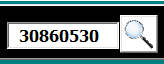
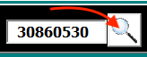
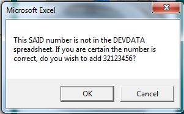
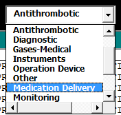
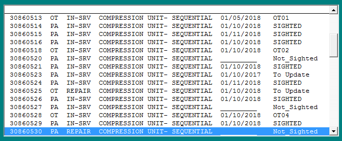
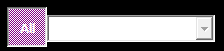
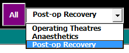

Equipment Management¶
Device Search¶
An SAID number is made up of eight numeric digits. To find a device in the system, type the number into the search field:
and either click on the Search button:
or simply press <Enter> on the keyboard.
Note:
the entry into the search field is checked for non-numeric (alphabet letters) characters, and then that the entry is eight digits long. If the entry does not meet those conditions, the user is notified; otherwise, a search is performed.
If the number was entered correctly and the corresponding SAID exists in the DevData worksheet (a record exists for the device in DEVDATA) in Asset Manager, the software will find it and display it in a list of similar devices. If the SAID number cannot not be found, the user will be prompted via a dialogue to add a new device using the entered SAID number:
It’s a good idea to double-check that the SAID number was typed in correctly. If so, the user has a choice: select [ Cancel ] to cancel adding a device with that SAID number or [ Ok ] to open the Edit Device Information form to add a new device to Asset Manager.
Device Types and Locations¶
Next to the Search field and button is a dropdown box with a list of device types. The main devices list-box displays a list of devices that are part of a device type group. The device type dropdown box looks like a textbox, except that it has a down-pointing arrow at the right of the field:
Select from this dropdown to display devices that correspond to the selected device type in the list below. Possible types include:
- Antithrombotic
- Gases-Medical
- Medication Delivery
- Patient Warming
- Monitoring
and so on.
Button Bar¶
The button bar’s buttons provide a quick and easy way to do the most common tasks.
{kind=link}
NewDevice - The New Device button opens the Edit Equipment form to allow entry of a new device into Asset Manager.
{kind=link}
EditDevice - The Edit Device button opens the Edit Equipment form to allow entry of information on an existing device in Asset Manager. Note: if an entry in the Events Listbox is selected, that entry will be opened for editing; otherwise, it is assumed that the user wishes to enter a new Event for the selected device.
{kind=link}
Reports - The Reports button opens the Reports dialogue offering a number of device reports which print on to the BYTYPE (by type) and DEVHIST (device history) worksheets.
{kind=link}
ShowSheet - The Show Sheet button closes the Manage Equipment form, makes the DEVDATA worksheet the active worksheet and drops the user onto the record in that sheet corresponding to the last selected device in the Device List.
{kind=link}
{kind=link}
Device List¶
The list of devices in the upper listbox show all devices that correspond to the device type selected in the Device Type dropdown:
The currently selected device is the one that is highlighted. The device’s SAID number will display in the Search field.
The columns in that listbox are:
| Column | Description |
|---|---|
| SAID | A unique identifying number issued by Materiel Management |
| Owner | Location: OT - AN - PA [1] |
| Status | “In Service”, “To Repairs”, and so forth |
| Description | The name of the device, conforming to Materiel Management / BTS |
| Test-n-Tag Date | Date of last BTS Test-n-Tag |
| Located-Sighted | Where (or if) the device was last sighted |
The last two columns were added to help identify devices that had not been sighted - and thus may have disappeared from the unit or have through some other means gone missing. This is necessary for yearly inventory purposes.
As the user can see from the above table, one of the approaches to managing devices is by assigning the device a status. No device is infinitely useful: thus, it has a lifespan and a status within that lifespan: for example, “In Service”, “To Repairs”, “Decommissioned” or “On Loan”.
The second column - Owner - refers more to the most likely location the device would occupy. The view can be modified to list only devices with a specific owner. Above the list, to the right of the Device Type dropdown, is a Owner toggle button. When set to [On] (the default setting):
the list view will display all devices of type. [All] toggled [On] also clears and disables the Owners dropdown. Toggling [All] to [Off]:
enables the Owners dropdown: the user can then select which owner’s devices to display in the Devices List (and the owner column will no longer display in the list).
The Devices List only displays devices that are active in the system and does not display devices with a status of “Decommissioned”, so as to minimise clutter. In order to see those devices, from the Filter Menu, select “All Devices” from the bottom of that dropdown. To remove “Decommissioned” devices from view, select “Active” from the Filter dropdown.
Events List¶
In the course of its lifespan, a device will see a number of events. By definition, when a device changes status, it is considered a new event. Recording a change of device status is done in the “Add or Edit Equipment” form.
This listbox displays all events for the currently selected device in the Devices List. Changing which device is selected will change the events displayed.
The Image¶
When available, the image displayed corresponds to the currently selected device in the Device List. If no item is selected, or no picture exists for the selected item, the image is just a question mark, the default image.
Developer Stuff¶
The unmarked tickbox in the lower right-hand corner of the form - to the right of the Events Listbox - is a developer toggle. Ticking this allows messages to appear that indicate what the code is in process of doing, and associated values of that process. For most purposes, this is best left unticked. Duplicated in the menu under Help -> ‘Developer Mode On’.
Additional Notes
[1] OT (Operating), AN (Anaesthetics), PA (PACU) - synonymous with Location, the terms are used interchangeably. Note that the Owner column will not display in the Device List if the (“AllOwners”) toggle is toggled off (NOT greyed out or depressed) and the dropdown next to it displays an Owner/Location.
[2] ‘All active devices’ means any Device that has not been decommissioned or been returned from the loaning organisation will display in the list. Not to be confused with ‘All Devices’ (see below [7]).
[3] A Device that has been identified as needing repair, and is pending being set to BTS. Use only if the item has not yet been sent. This allows the user to designate items to be repaired, taking them offline, but leaving the actual sending to BTS process for a more convenient time.
[4] A Device for which a record exists in Asset Manager, but has not been sighted in some time.
[5] A Device that is in a fully operational state but has been stored as it is not currently needed.
[6] A Device on loan from another organisation or department. All devices must have an SAID number. If the device is on loan from another hospital in the organisation (say, loaned from loan by QEII), the SAID will identify the unit’s original location on the BTS website.
[7] (1, 2) Selecting ‘All Devices’ turns on viewing all Devices in the Device List, including decommissioned and loaned devices. Viewing all devices is turned off by default. Search will find the device by SAID (asset number), regardless of this setting.